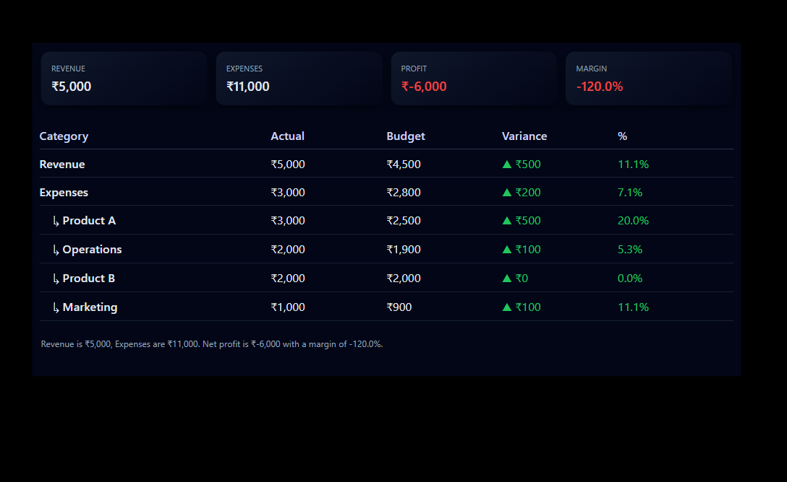
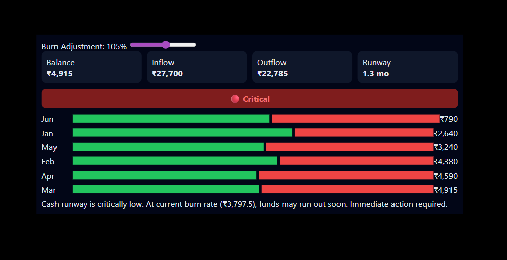
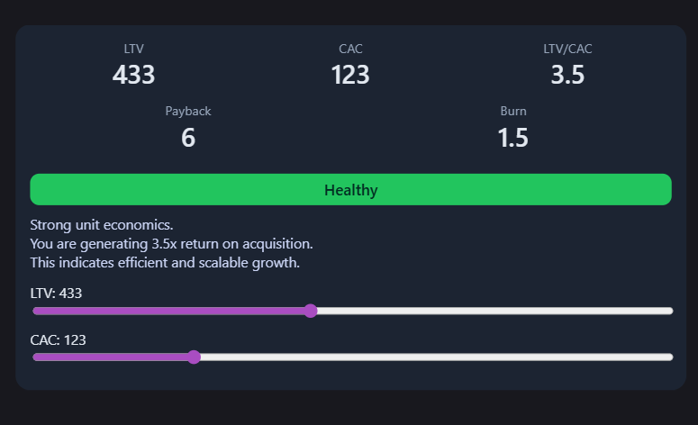
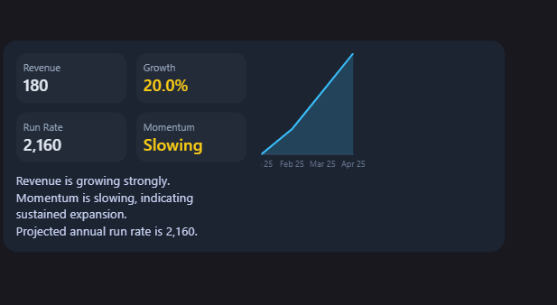

Attrition Risk Dial
Spot high-risk employees before they decide to leave.
HRRiskKPI
Attrition Risk Dial
A real-time attrition scoring visual that combines multiple HR signals into a single risk indicator. Enables leaders to quickly identify at-risk employees and take proactive retention actions before churn happens.

Attrition Risk Gauge
Track workforce risk in real time.
HRGaugeAnalytics
Attrition Risk Gauge
A dynamic gauge visual with configurable thresholds to monitor workforce stability. Ideal for tracking attrition risk trends over time and triggering alerts when risk crosses critical limits.

Attrition Risk Heatmap
Uncover hidden attrition hotspots instantly
HRHeatmapInsights
Attrition Risk Heatmap
A powerful heatmap that highlights attrition risk across departments, roles, and locations. Helps uncover hidden hotspots and patterns that traditional reports often miss.

Demographic KPI
Understand workforce diversity at a glance
HRKPI
Demographic KPI
A compact KPI visual designed to track workforce diversity metrics including gender ratio, age distribution, and representation. Perfect for DEI dashboards and executive reporting.

Employee File Card
All employee insights in one view
HRProfile
Employee File Card
A comprehensive employee profile card that consolidates performance, tenure, engagement, and risk indicators into a single view—ideal for HR reviews and manager dashboards.

Network Relationship Visual
Reveal hidden organizational connections
Network
Network Relationship Visual
A graph-based visualization that maps relationships and interactions across teams or systems. Useful for identifying key influencers, collaboration gaps, and organizational silos.

Network Route Visual
Visualize data and process flow
Flow
Network Route Visual
A directional flow visual that tracks movement of data, processes, or transactions across nodes. Ideal for process analysis, supply chain tracking, or system architecture mapping.

Performance Radar
Compare performance across dimensions
Performance
Performance Radar
A multi-dimensional radar chart that compares performance across key metrics such as productivity, quality, and efficiency—helping teams quickly identify strengths and gaps.

Population Pyramid
See workforce distribution clearly
Demographics
Population Pyramid
A dual-axis visualization that displays workforce distribution by age, gender, or category. Useful for demographic analysis, workforce planning, and trend comparisons.

Risk Simulator Panel
Test decisions before they impact your business
Simulation
Risk Simulator Panel
An interactive simulation tool that allows users to test different scenarios and instantly see the impact on key risk metrics—supporting data-driven decision making.

Risk KPI Card
Monitor critical risk metrics
KPIRisk
Risk KPI Card
An executive-ready KPI card that highlights critical risk indicators with trend, variance, and status signals—designed for quick decision-making in high-stakes environments.

What-If Scenario Planner
Simulate revenue and cost impact
Finance
What-If Scenario Planner
A flexible scenario planning tool that enables users to simulate changes in revenue, cost, or assumptions and instantly visualize financial impact across multiple dimensions.

P&L Variance KPI
Track financial performance and variance
FinanceKPI
P&L Variance KPI
A financial performance visual that tracks actual vs planned values with clear variance indicators, helping finance teams quickly identify deviations and take corrective action.

Cash Flow Health Monitor
Track burn rate, runway, and cash risk in real time.
Finance
Cash Flow
Risk
KPI
Cash Flow Health Monitor
A real-time financial health dashboard that tracks cash inflow, outflow, burn rate, and runway. Includes dynamic risk indicators to help businesses avoid liquidity issues and plan ahead.

Unit Economics Visual
Evaluate LTV, CAC, and growth efficiency in one view.
Finance
Startup
KPI
Analytics
Unit Economics Visual
A strategic analytics visual that tracks LTV, CAC, payback period, and burn rate to evaluate business efficiency, scalability, and growth sustainability.

Revenue Growth Visual
Track revenue trends, growth rate, and momentum in one view.
Finance
Growth
KPI
Trend
Revenue Growth Visual
A trend-focused analytics visual that highlights revenue growth, run rate, and momentum indicators with narrative insights for strategic decision-making.